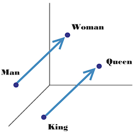
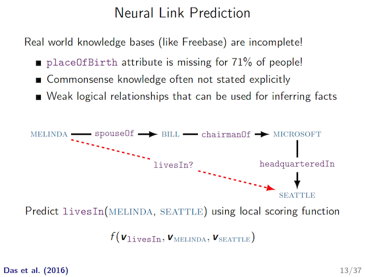
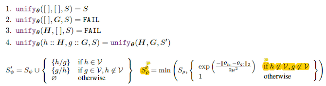
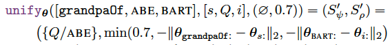
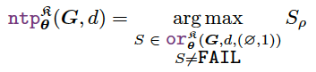
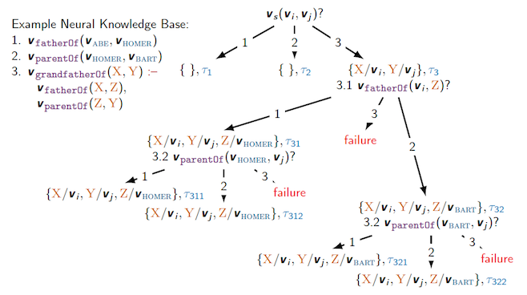
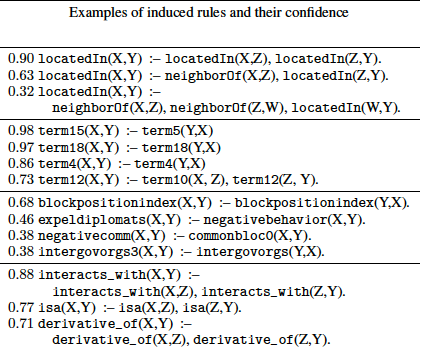

I lead the discussion about this paper End-to-end Differentiable Proving in our reading group on 10/27/2017. The paper is to appear on NIPS’17.
Official slides. I’ll use some examples from official slides to elaborate their idea.
Please do not hesitate to correct me if I am wrong anywhere. Thanks in advance. 🙂
Term Clarification
To begin with, it may be necessary to clarify on the term distributed representation a bit. Distributed Systems is a big focus in our group but it has nothing to do with the term distributed representation here.
First of all, the word king can be represented as 0 0 1 0 ... 0 regarding a dictionary $D$ if king is the 2nd (zero-based) word in $D$. Only the 2nd bit is 1, and all the rest are 0. The size of this vector is the size of $D$. This is called one-hot encoding.
Then distributed representation is like the dual concept of one-hot encoding, it can have multiple non-zero values, say 0.12 0.0 0.87 -0.77 ... 0.99.
This is also called embedding, it is essentially a vector in the high dimension space representing the original word. After training, semantically related words are supposed to have close vectors in high dimension space. Moreover, some relation between words may also be learned, as shown below:

Background
Now let’s take a closer look at this paper. I think this paper is very interesting, in that it successfully integrates ML techniques and PL techniques, and can “induce logical rules”!
Previously in PL
There is the so-called backward chaining algorithm as in Prolog that can search and construct a proof for some goal. For example: 
In the example Knowledge Base (KB), (1) and (2) are facts, (3) is a rule – to prove that X is grandfather of Y, it suffices to satisfy two subgoals:
- first, prove that X is the father of some Z,
- and second, prove Z is the parent of Y.
To search and construct a proof for the goal “ABE is grandfather of BART”, it first searches in KB if any header of rule/fact matches with the goal (OR rule). In this example, rule (3) matches, so X is linked with ABE, Y is linked with BART.
Then it has to prove both of the 2 subgoals (AND rule), which is what 3.1 and 3.2 are doing. It recursively proves each subgoal by searching for matched rules in the KB.
It is that simple. But this traditional backward chaining algorithm is based on symbolic matching. In other words:
grandpaOf(A, B)andgrandfatherOf(A, B)are not equal, unless specified explicitly elsewhere.parentOf(A, B)andfatherOf(A, B)are not similar, unless specified explicitly elsewhere.isFruit(apple)andisFruit(orange)are not related at all, unless “apple ~ orange” is specified explicitly elsewhere.
These are where ML technique can help!
Previously in ML
There is the so-called Neural Link Prediction problem whose main approach is based on embedding. 
According to paper description, those are unable to directly encode prior knowledge such as grandfatherOf(X, Y) :- fatherOf(X, Z) & parentOf(Z, Y).
This missing multi-hop reasoning ability will be added after incorporating the backward chaining search algorithm!
Integration
This paper merges existing “Neural Link Prediction” idea (mainly via learning embeddings of sub-symbolic terms) with traditional “backward chaining” algorithm in Prolog.
More specifically, the “proof search” process is a divide-and-conquer style backward chaining search algorithm, with the most fundamental “symbolic unification” op being replaced by “embedding similarity comparison”.
The integration in this paper satisfies one sufficient condition for successful ML/PL integration I mentioned before – ML introduces new information that is hard for PL to discover by itself.
For more details, there is this proof state $S = S_ψ, S_ρ$:
- $S_ψ$ is the substitution set, it stores the instantiation of variables in rule to concrete terms.
- $S_ρ$ is the proof success score (confidence) so far. It will only decrease.
When doing inference, it follows the same basic search algorithm as that in traditional backward chaining algorithm. The proof state will be passed along, and sometimes multiple proof states (for multiple subgoals) will be generated, and aggregated later on.
UNIFY
The major difference is in unification module which matches the sub-symbolic terms in goal and knowledge base. Instead of symbolic unification (e.g. f(A, B) ~ f(Alice, Bob) ⇒ A/Alice, B/Bob), it compares the embedding of 2 non-variable symbols using RBF kernel.
- RBF kernel can output a score for two vectors.
- I suspect the reason of using RBF kernel is to train jointly with Neural Link Predictor later on. They mentioned this optimizer in the paper later on. That Neural Link Predictor is used as a “regularizer” towards better training.
The unification module is shown as below. 
(1)-(4) are self-explanatory, just list comparison.
$S_ψ’$ is adding more variable matches into substitution set. This is the same as traditional backward chaining algorithm.
$S_ρ’$ is the difference. This proof success score is updated to the min of all sub-symbolic pairwise comparison results, with the cap of previous score. Note that it only compares non-variable symbols.
Consider the following example: 
It tries to unify
[grandpaOf, ABE, BART]with[s, Q, i], the given proof state is an empty substitution set ∅ and a proof score 0.7.Only
Qis variable here, andQis matched toABE.Then $S_ρ’$ is the min of 0.7 (upstream success score), and two sub-symbolic pairwise comparison results for
grandpaOf~sandBART~i.
OR / AND
There are also corresponding OR module and AND module that are simply re-implementations of traditional backward chaining algorithm with different notations to handle proof state $(S_ψ, S_ρ)$.
Inference
With all these, the actual proof search is to find the largest proof tree that maximizes the proof success score $S_ρ$ with a non-FAIL result: 
Example

Consider the same example now using their Neural Theorem Prover approach. It is trying to prove some goal of (s, i, j), none of which are variables. $V_s$ is the vector representation (embedding) of s.
- From my understanding,
(s, i, j)is a parameterized template, but not concrete values, yet. Now that the unification is done by embedding similarity scores, it can find multiple non-fixed terms (each with a confidence score) with a similar shape. This can be used in their another application of “inducing logical rules”.
The divide-and-conquer search strategy is no different than before. But as you can see in the rightmost path from (3.1) –(rule 2)-> (3.2), it is able to unify goal fatherOf with fact parentOf, which was impossible using PL method alone.
Training
The training is done using just existing facts and rules in the Knowledge Base. But there is one problem – all of those are positive data. Obviously, learning from fully imbalanced data won’t be effective.
They use negative sampling to handle this issue. Negative sampling was also used in the famous Word Embedding work in 2013. It manually corrupts some data and expect the model to predict 0 for them. With both positive and negative data, it just use the canonical Negative Log-Likelihood loss function.
So along the recursive divide-and-conquer search process, the gradients during embedding comparison will be collected and optimized accordingly.
Joint Training with Neural Link Predictor
But, just by the technique described so far it still cannot outperform previous tools in all their datasets. By Neural Theorem Prover alone, the training is slow and less effective.
One important optimization is to do joint training with Neural Link Predictor (ξ3.8). The neural link predictor ComplEx they use can learn local sub-symbolic representations much better, which uses RBF as well (that’s why I suspect they are using RBF because of this).
So the loss is just by adding NTP loss and ComplEx loss. In other words, ComplEx serve as a regularizer here.
Inducing Logical Rules
Wait, one more thing!
They claim to be able to “induce” logical rules! As shown below: 
It can induce the rule such as “To prove that X is located in Y, it can prove that X is located in some Z and Z is located in Y”.
Isn’t this awesome?! Well, it’s not pure magic. Some “parametrized rule” needs to be provided as a template, such as r(X, Y) :- s(X, Z), t(Z, Y).
The idea is that:
During training, the embedding of this parameterized rule is optimized jointly with everything else.
After training, inspect this parametrized rule by searching for known predicate representations that are collectively closest to the template in high dimension space.
The logical rule of specified format is thereby induced. I just found this idea to be very interesting!
□